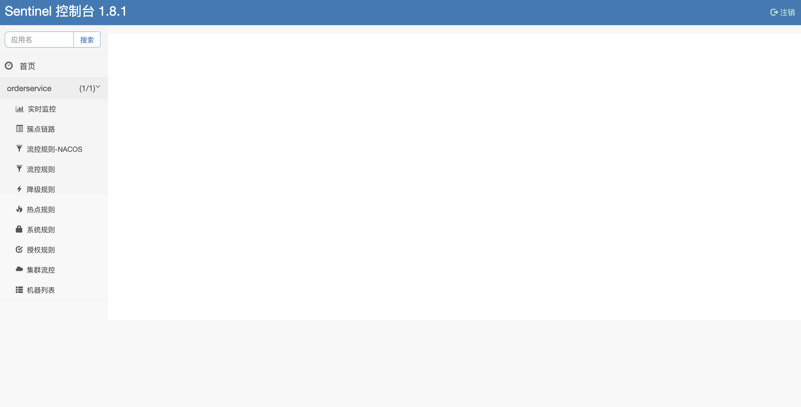
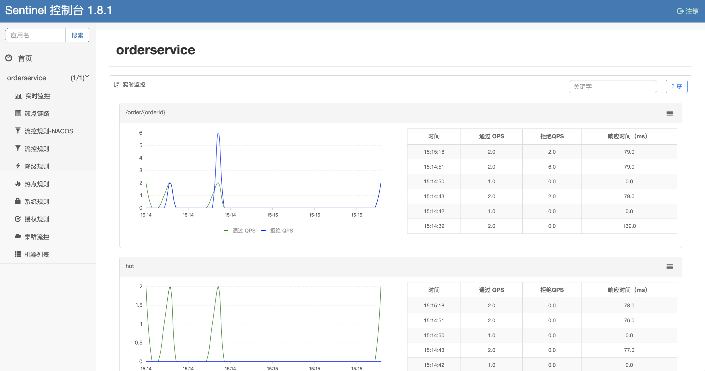
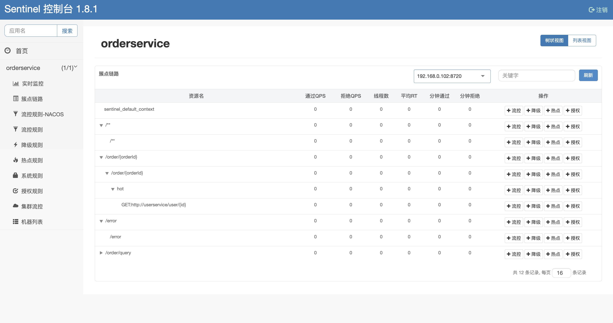
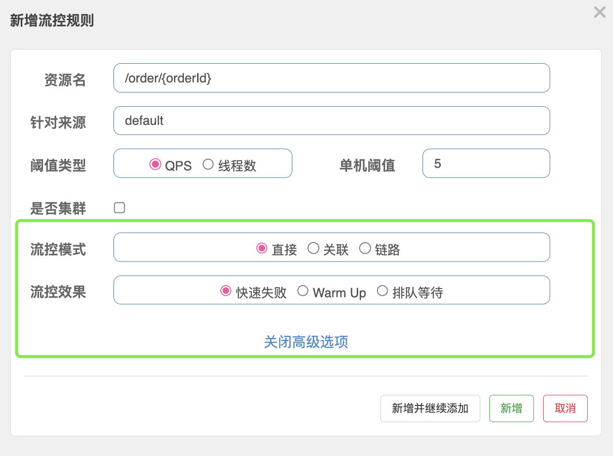
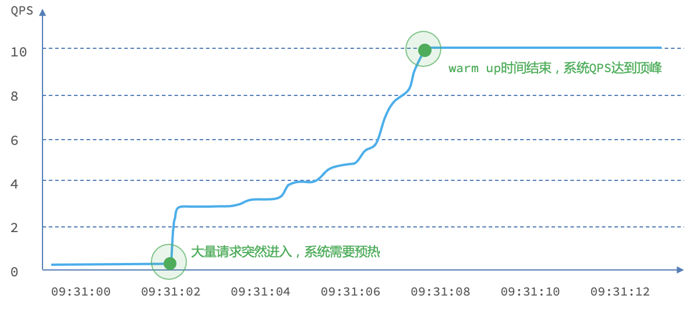
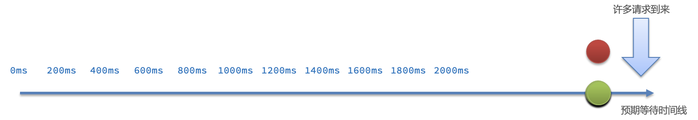
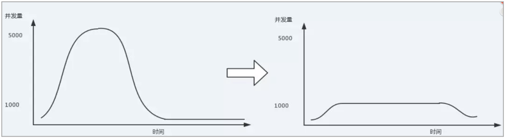
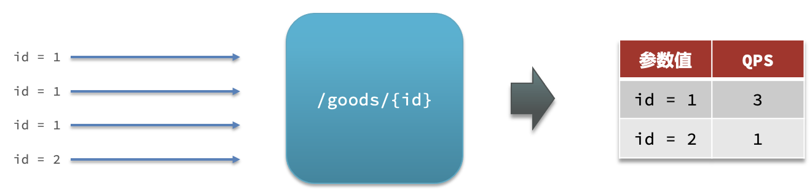
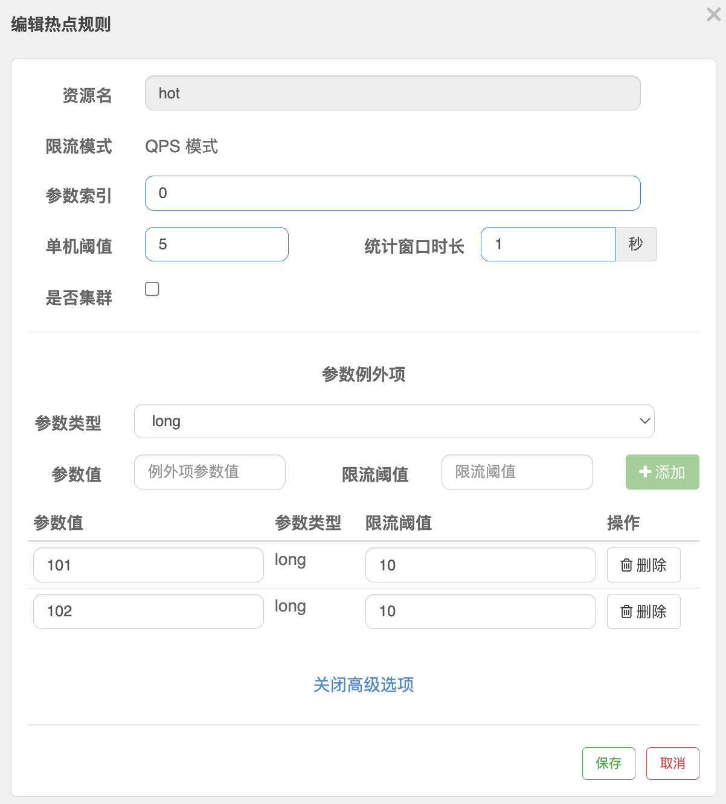

「Sentinel - 2」-- Sentinel Dashboard
Sentinel Dashboard
Sentinel 控制台启动方式有两种：
- Sentinel官网提供了现成的sentinel-dashboard.jar包，down下来，通过
java -jar sentinel-dashboard.jar命令即可启动，默认端口为8080； - 下载Sentinel的源码，其中有Sentinel-Dashboard模块，使用Maven的
package命令打包，同样使用java -jar xxx就可启动；
启动之后，访问localhost:8080，进入Sentinel Dashboard界面，默认鉴权，账号和密码都为： sentinel
如果要修改Sentinel的默认端口、账户、密码，可以通过下列配置：
| 配置项 | 默认值 | 说明 |
|---|---|---|
| server.port | 8080 | 服务端口 |
| sentinel.dashboard.auth.username | sentinel | 默认用户名 |
| sentinel.dashboard.auth.password | sentinel | 默认密码 |
如：
1 | java -jar sentinel-dashboard-1.8.1.jar -Dserver.port=8090 |
登录之后的主界面如下：

注：
- Sentinel 控制台需要有目标资源被调用，才会展示资源的相关配置模块，如果没有调用请求，控制台没有显示的。如上图中的
orderservice就是因为已经有调用过该应用资源才会展示。 - 其中的流控规则-NACOS是利用Nacos作为注册中心对Sentinel的流控规则进行持久化的模块，需要对Sentinel源码进行修改。
控制台功能
根据上图可以清楚的看出Sentinel控制台提供的能力，本文结合个人实际开发中常用的一些功能模块进行介绍。
- 实时监控
- 簇点链路
- 流控规则
- 降级规则
- 热点规则
- 授权规则
实时监控
实时监控模块可以进行秒级的实时统计并展示。

簇点链路
簇点链路就是项目内的调用链路，链路中被监控的每个接口就是一个资源。默认情况下sentinel会监控SpringMVC的每一个端点（Endpoint），因此SpringMVC的每一个端点（Endpoint）就是调用链路中的一个资源。
流控、熔断等都是针对簇点链路中的资源来设置的，因此我们可以点击对应资源后面的按钮来设置规则：

流控规则
普通流控设置
可以为每个资源定义流控规则，在簇点链路界中点击目标资源后面的+流控 按钮，就会出现设置页面，如图：
- 资源名：表示需要进行流控的目标资源名称，就是展示在簇点链路页面中所有资源的名称
- 针对来源：一般都是default
- 阈值类型：QPS or 线程数
- QPS是指对访问目标资源的QPS进行限制
- 线程数是指对访问目标资源的并发度进行限制
- 单机阈值：单节点的访问限制值
其含义是限制 /order/{orderId} 这个资源的单机QPS为5，即每秒只允许5次请求，超出的请求会被拦截并报错。
流控高级选项
限流规则中有两个高级选项，可以对流控模式和流控效果进行进一步的细化，如图：
流控模式
直接：统计当前资源的请求，触发阈值时对当前资源直接限流，默认模式；
关联：统计与当前资源相关的另一个资源，当另一个资源触发阈值时，对当前资源限流；
- 使用场景：比如用户支付时需要修改订单状态，同时用户要查询订单。查询和修改操作会争抢数据库锁，产生竞争。因此当修改订单业务触发阈值时，需要对查询订单业务限流。
- 满足下面条件可以使用关联模式：
- 两个有竞争关系的资源；
- 一个优先级较高，一个优先级较低；当优先级高的资源达到阈值之后对优先级低的资源进行限流，高优先级的资源不受影响。
- 链路：统计从指定链路访问到本资源的请求，触发阈值时，对指定链路限流；
- Sentinel默认只标记
Controller层中的方法为资源，如果要标记其它方法，需要利用@SentinelResource注解，如：
- Sentinel默认只标记
1 |
|
- Sentinel默认会将
Controller方法做context整合，导致链路模式的流控失效，需要修改application.yml，添加配置：
1 | spring: |
- 使用场景：
- 例如有两条请求链路：
/test1 -> /common和test2 -> /common如果只希望统计从/test2进入到/common的请求，则可以这样配置：
- 例如有两条请求链路：
流控效果
流控效果是指请求达到流控阈值时采取的措施，包括三种：
快速失败：请求达到阈值后，新的请求会被立即拒绝并抛出
FlowException异常。默认流控效果。warm up：预热模式，对超出阈值的请求同样是拒绝并抛出异常。但这种模式阈值会动态变化，从一个较小值逐渐增加到最大阈值。
warm up也叫预热模式，是应对服务冷启动的一种方案（整体实现的方案和Dubbo的服务预热很类似）。请求阈值初始值是
threshold / coldFactor，持续指定时长后，逐渐提高到threshold值。而coldFactor的默认值是3。例如，设置QPS的threshold为10，预热时间为5秒，那么初始阈值就是 10 / 3 ，也就是3，然后在5秒后逐渐增长到10。整个过程如图：

排队等待：让所有的请求按照先后次序排队执行，两个请求的间隔不能小于指定时长。
当请求超过QPS阈值时，快速失败 和 warm up 都会拒绝新的请求并抛出异常。而排队等待则是让所有请求进入一个队列中，然后按照阈值允许的时间间隔依次执行。后来的请求必须等待前面执行完成，如果请求预期的等待时间超出最大时长，则会被拒绝。
例如：QPS = 5，意味着理论上每200ms处理一个队列中的请求；timeout = 2000，意味着预期等待超过2000ms的请求会被拒绝并抛出异常。如果队列中已经存在了10个请求，那么后续的请求等待时间理论上就是 10 * 200 ms = 2000ms，已经到达timeout时间了，请求就会被拒绝。
排队等待的限流效果其实就是流量整形
- 
热点规则
热点参数限流对默认的SpringMVC资源无效，如果需要使用热点规则，需要使用 @SentileResource 注解进行单独标识。
热点参数限流是分别统计参数值相同的请求，判断是否超过QPS阈值。
如上图，有请求goods/{id}的资源，其中id是热点参数，其值有两种 1,3；如果需要对请求参数id=1进行限流，则需要进行热点参数限流：
在热点参数限流的高级选项中，可以对部分参数设置例外配置：
结合上一个配置，这里的含义是对索引值为0号（即请求资源时的第一个参数）的long类型参数限流，每1秒相同参数的QPS不能超过5，有两个例外：
- 如果参数值是100，则每1秒允许的QPS为10；
- 如果参数值是101，则每1秒允许的QPS为10
降级规则
授权规则
参考文档：
 微信
微信